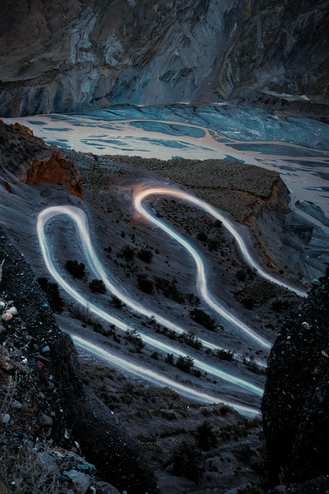
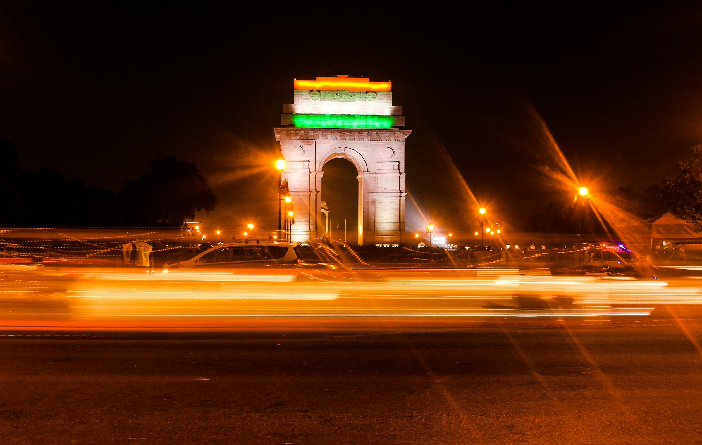
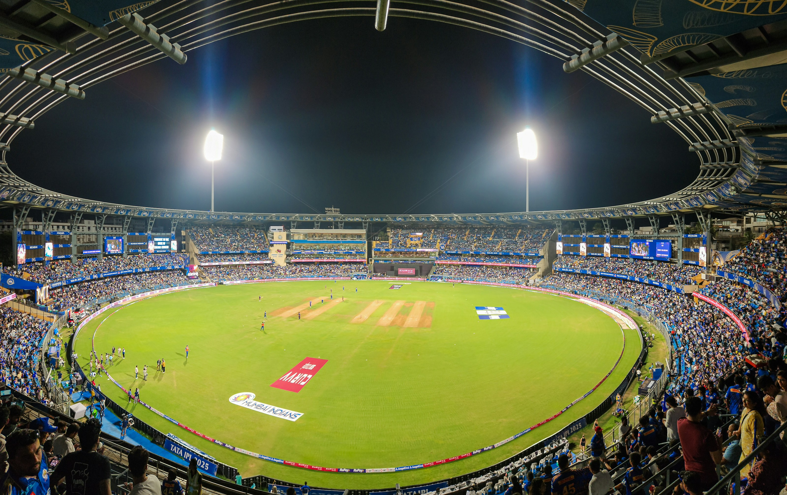
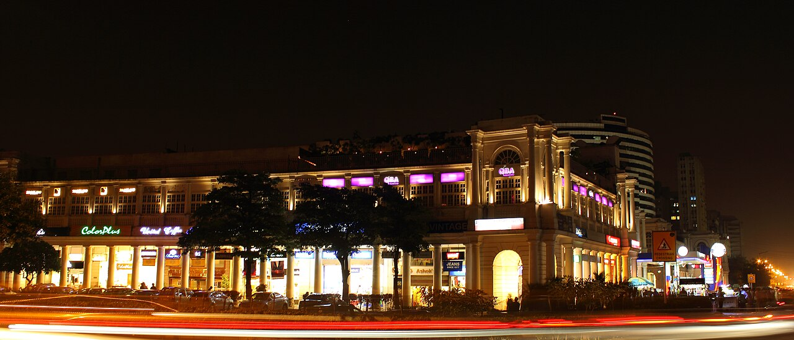
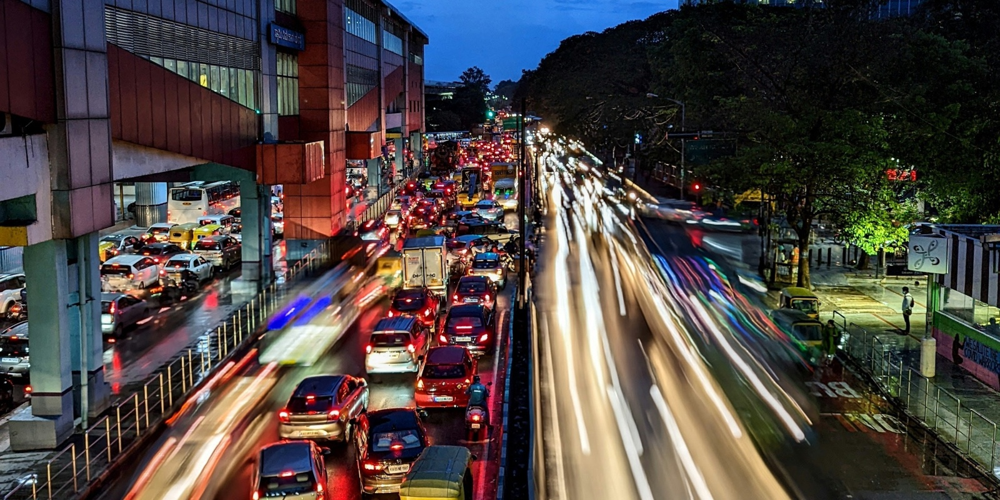
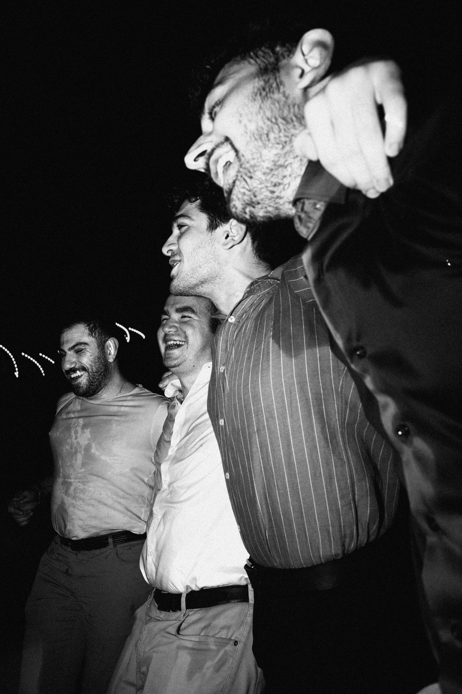

01 / EVENTIFYLESS WAITING.
2 days20 minutes
A workflow that kept getting in the way. A tool to make it less painful. Those are the before-and-after numbers from my own public account.
Read the Eventify story ↗
THE CITIES. THE PEOPLE. THE IN-BETWEEN.
A personal story by Nikhil Singh.
Figuring out the work, the world, and myself.
Delhi. Mumbai. Back to Delhi. Then Bengaluru.
On paper, that’s four stops. In my head, it’s the work I found, the people I met, and the things I kept coming back to.
01 THE PLACE THAT KNOWS THE FIRST ME
Before all the new addresses, there were familiar roads. Familiar food. People who didn’t need the polished introduction.
I started in operations at GoMechanic, then moved further into data at PhysicsWallah. I was figuring out what I liked by actually doing it.
The PhysicsWallah farewell ↗Then came a new city.
And cricket for a living.

02 THE CITY I DIDN’T PLAN TO MISS
I arrived for Dream11.
Somewhere between cricket, experiments, and a new pace of life, the city started feeling like mine.
THE FAN MET THE ANALYST
My first night playing Dream Cricket turned into playing until morning. Being the player changed the questions I brought back to the work.
Cricket was already personal. Now it was part of the job, too.
Read the first-night story ↗
03 THE BREATH BETWEEN
Delhi, again. A familiar place to work out what the next move was for.

I can want to see how far I can go.
And still really miss my mother.

04 HELLO, BENGALURU
New city.
Same overthinking.
A new room. A new routine. The ordinary business of making somewhere feel like your own. The ambition came along. So did the music, the car opinions, and the part that will always miss home.
The arrival post ↗ THIS PART IS STILL HAPPENING.DIFFERENT ADDRESSES
THE ONE THAT STARTED IT
The M4 F82 made me a car person. I wrote about it in 2022. It’s been taking up space in my head ever since.
The F82 origin story ↗There’s a real post about sitting in the car for forty minutes after reaching home because of the playlist. That explains a lot.
Aujla. Diljit. Shreya.
And a Bollywood song I know every word to.
WHEN THE HEAD GETS TOO LOUD.
The mountains give the comparison and the noise a little less room. Sometimes a different view is enough to ask a better question.
The mountains note ↗THE PART A TIMELINE CAN’T HOLD
The people behind the courage. The confidence. The softer place to land.
Being loved is still the biggest flex.

The gym has a particular kind of honesty. Failure can also be evidence that you’re growing. I’m learning to trust that outside the gym, too.
The training note ↗SOMEWHERE IN ALL OF THIS
I like getting close enough to a problem to make the work easier for someone.
A workflow that kept getting in the way. A tool to make it less painful. Those are the before-and-after numbers from my own public account.
Read the Eventify story ↗A business question shouldn’t always need someone else to translate it into SQL. I worked on a plain-English route to the data.
Read the analytics tool story ↗Good company makes the detours better.